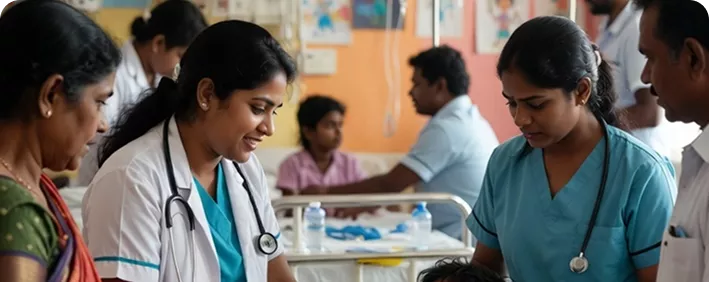

Pediatric Palliative Care Centre – Coimbatore
Swadharma Foundation is preparing to expand its social impact initiatives through the following upcoming projects aimed at inclusive development, healthcare access, and empowerment of marginalized communities.